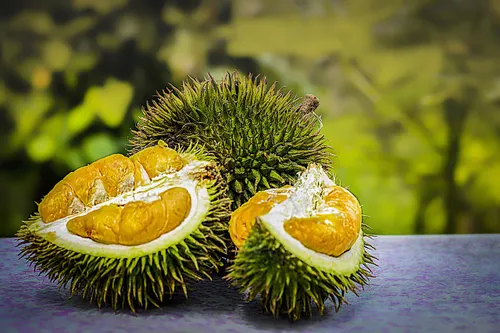
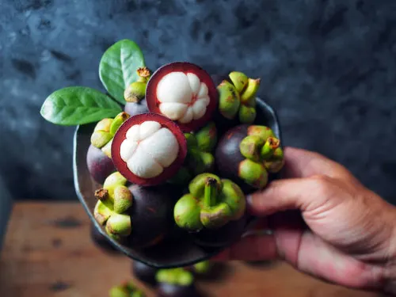
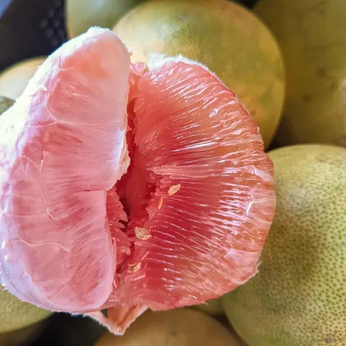
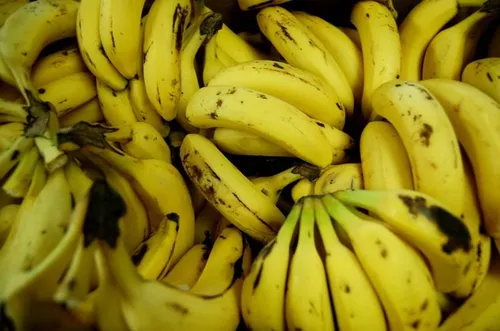

What Fruit is Davao Known For?
Davao City and its surrounding provinces are home to some of the best culinary and agricultural treasures in the Philippines. From its world-famous durian to its abundant seafood, tropical fruits, and rich cultural heritage, the region offers a diverse and flavorful dining experience. In this guide, we’ll explore what Davao is known for, its best dishes, and how it has become a food and agricultural powerhouse in the country.

Durian – The “King of Fruits”
Davao's most famous export, durian, is an iconic tropical fruit with a formidable reputation. It is characterized by its large size, spiky exterior, and a rich, creamy flesh. The fruit's potent and distinctive aroma is legendary, often described as a mix of sweet, savory, and even pungent notes, which elicits strong reactions – many find it incredibly delicious, while others are repelled by its smell. Despite its polarizing scent, its custardy texture and complex, sweet-savory flavor profile have earned it the affectionate title of "King of Fruits."

Mangosteen – The “Queen of Fruits”
Complementing the durian's reign is the mangosteen, aptly dubbed the "Queen of Fruits." This small, round fruit boasts a thick, deep purple rind that, when opened, reveals segments of soft, white, juicy flesh. Its flavor is a delightful balance of sweetness with a subtle tang, offering a refreshing and exotic taste that is widely adored.

Pomelo
A large and juicy citrus fruit, the pomelo is a popular choice in Davao. Resembling a giant grapefruit, it has a thick rind and segments of sweet, slightly tart flesh. It is most commonly enjoyed fresh, either on its own or as part of fruit platters, and its abundant juice also makes it a refreshing base for various beverages.

Banana
Davao plays a significant role in the Philippines' status as a major banana producer. The region cultivates a variety of bananas, including the popular Lakatan and Latundan varieties, known for their sweetness and distinct flavors. These bananas are not only a staple food but also a significant agricultural export, contributing greatly to the local economy.
Reference: davaodelnorte-fruits-in-DavNor